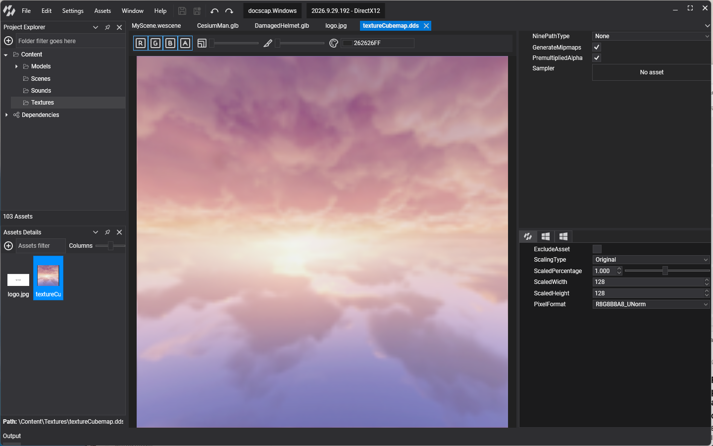
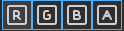
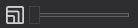
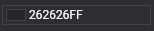

Texture Editor

The Texture Editor previews a texture and edits its import settings. Double-click a texture in Assets Details to open it. It has three parts: the viewport, the toolbox and the properties.
Viewport
Shows the texture with the current settings, and a label with its type, size in pixels, pixel format and size on disk, for example Texture2D 4096x4096 px R8G8B8A8_UNorm.
Toolbox
| Item | Description |
|---|---|
 |
Show or hide the red, green, blue and alpha channels. |
 |
Mip level to show. Hidden for textures without mipmaps. |
| Slice | Array slice or depth slice to show, for array and 3D textures. |
| Range | Range of values mapped to black and white. Use it to inspect HDR textures, whose values go beyond 1, and data textures that use a small part of the range. |
 |
Background color of the viewport, to judge transparency. |
| RenderDoc | Capture a frame of the viewport with RenderDoc. |
Properties
These settings are the same for every profile:
| Property | Default | Description |
|---|---|---|
| GenerateMipmaps | true | Generate the mipmap chain on import. Turn it off for UI images and textures always shown at their full size. |
| PremultipliedAlpha | true | Multiply the color channels by alpha on import, which gives correct filtering and blending at transparent edges. |
| Sampler | The sampler the texture uses by default. | |
| NinePatchType | None |
None or FromTexture. Reserved for nine-patch scaling of UI images; the engine does not use it yet. |
Profile properties
These settings can differ per profile:
| Property | Default | Description |
|---|---|---|
| ScalingType | Original |
How the image is resized on export: Original keeps its size; Percentage scales it by ScaledPercentage; Freeform sets ScaledWidth and ScaledHeight; PowerOfTwo rounds each side to a power of two; SquarePowerOfTwo makes it a square power of two. |
| ScaledPercentage | 1 | Scale factor for Percentage, from 0.1 to 2. |
| ScaledWidth | image width | Width for Freeform. |
| ScaledHeight | image height | Height for Freeform. |
| PixelFormat | from the image | Pixel format of the exported texture, for example R8G8B8A8_UNorm or a block-compressed format. Choosing an sRGB format tells the GPU the texture holds gamma-encoded color. |